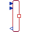
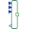

PotentialToFlowAdaptorSignal adaptor for a connector with potential, 1st derivative of potential, and 2nd derivative of potential as inputs and flow, 1st derivative of flow, and 2nd derivative of flow as outputs (especially useful for FMUs) |
Information
This information is part of the Modelica Standard Library maintained by the Modelica Association.
Adaptor between a physical connector and a signal representation of the connector signals. This component is used to provide a pure signal interface around a physical model and export this model in form of an input/output block, especially as FMU (Functional Mock-up Unit).
This adaptor has potential, optional 1st derivative of potential, and optional 2nd derivative of potential as input and flow, optional 1st derivative of flow, and optional 2nd derivative of flow as output signals.
Note, the input signals must be consistent to each other (pder=der(p), pder2=der(pder)).
Parameters (4)
| use_pder |
Value: true Type: Boolean Description: Use input for 1st derivative of potential |
|---|---|
| use_pder2 |
Value: true Type: Boolean Description: Use input for 2nd derivative of potential (only if 1st derivate is used, too) |
| use_fder |
Value: true Type: Boolean Description: Use output for 1st derivative of flow |
| use_fder2 |
Value: true Type: Boolean Description: Use output for 2nd derivative of flow (only if 1st derivate is used, too) |
Connectors (6)
| p |
Type: RealInput Description: Input for potential |
|
|---|---|---|
| pder |
Type: RealInput Description: Optional input for der(potential) |
|
| pder2 |
Type: RealInput Description: Optional input for der2(potential) |
|
| f |
Type: RealOutput Description: Output for flow |
|
| fder |
Type: RealOutput Description: Optional output for der(flow) |
|
| fder2 |
Type: RealOutput Description: Optional output for der2(flow) |
Extended by (4)
|  |
GeneralTemperatureToHeatFlowAdaptor Modelica.Thermal.HeatTransfer.Components
Signal adaptor for a HeatTransfer port with heat flow as output and temperature and derivative of temperature as input (especially useful for FMUs) |
|  |
Modelica.Mechanics.Translational.Components
Signal adaptor for a Translational flange with force as output and position, speed and acceleration as input (especially useful for FMUs) |
|
Modelica.Mechanics.Rotational.Components
Signal adaptor for a rotational flange with torque as output and angle, speed and acceleration as input (especially useful for FMUs) |
|
|
GeneralVoltageToCurrentAdaptor Modelica.Electrical.Analog.Basic
Signal adaptor for an Electrical OnePort with current and derivative of current as output and voltage and derivative of voltage as input (especially useful for FMUs) |